1/11
封面：一千年放在同一条轴上
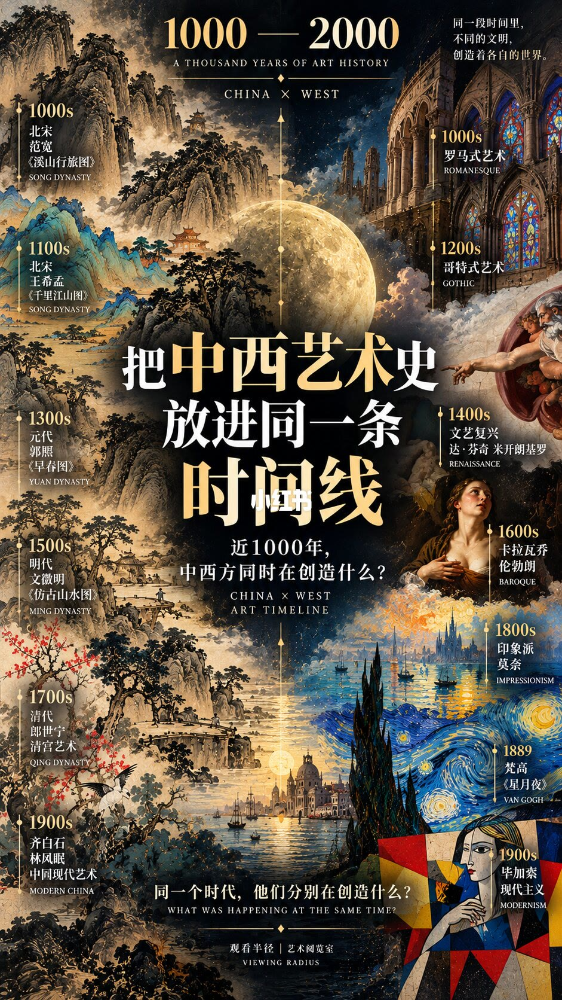
这一页是总览，不是某一个世纪的细目。顶上写着 1000—2000、A THOUSAND YEARS OF ART HISTORY、CHINA × WEST。主标题是「把中西艺术史放进同一条时间线」，副题是「近1000年，中西方同时在创造什么？」右上还有一句：「同一段时间里，不同的文明，创造着各自的世界。」底部问「同一个时代，他们分别在创造什么？」，并署「观看半径｜艺术阅览室」。
左栏能读到的作品标签包括：北宋范宽《溪山行旅图》、北宋王希孟《千里江山图》、明代文徵明《仿古山水图》、清代郎世宁与清宫艺术、齐白石与林风眠的中国现代艺术。画面上还有一条把郭熙《早春图》放在偏后世纪并标成元代的字，和第 2 页「约 1072 年」的北宋条目对不上，这条朝代无法确认。右栏能读到：罗马式、哥特式、文艺复兴（达·芬奇、米开朗基罗）、巴洛克（卡拉瓦乔、伦勃朗）、印象派莫奈、梵高《星月夜》旁有 1889、毕加索与现代主义。中间是满月和竖向时间刻度，作品是拼贴，不是按比例尺排的年表。
2/11
11 世纪：山水秩序对石头里的信仰
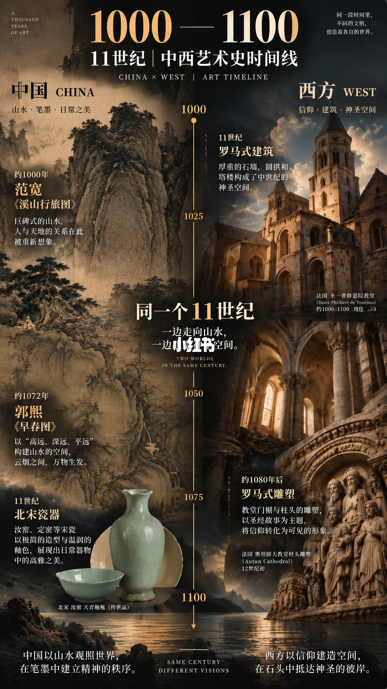
页题是「1000—1100｜11世纪｜中西艺术史时间线」。中轴刻度大约是 1000、1025、1050、1075、1100。中部口号读作「一边走向山水，一边走向空间」，底部英文是 SAME CENTURY DIFFERENT VISIONS。
中国一侧主题是山水、笔墨、日常之美。约 1000 年范宽《溪山行旅图》，文字说巨碑式山水重新想象人与天地的关系。约 1072 年郭熙《早春图》，用高远、深远、平远组织空间，云烟之间万物生发。11 世纪瓷器一条写汝窑、定窑以极简造型和温润釉色呈现日常器物里的高雅，配图是一件淡青的汝窑天青釉瓶（传世品）和一只小碗。底部把中国收成：以山水观照世界，在笔墨中建立精神的秩序。
西方一侧主题是信仰、建筑、神圣空间。罗马式建筑写厚重石墙、圆拱和塔楼。配图英文标成法国 Saint-Philibert de Tournus，约 1000–1100；对应中文专名无法确认。约 1080 年后的罗马式雕塑，以教堂门楣和柱头上的圣经故事把信仰变成可见形象，配图标成法国奥坦大教堂柱头，并写 12 世纪初。底部把西方收成：以信仰建造空间，在石头中抵达神圣的彼岸。奥坦柱头写成 12 世纪初，已经跨出本页 1100 年的右边界，海报自己的年代并不严丝合缝。
3/11
12 世纪：山河展开，教堂开始向天空长
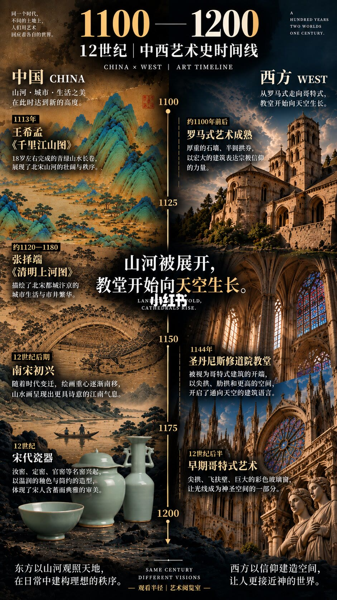
页题是「1100—1200｜12世纪」。中轴约 1100、1125、1150、1175、1200。左侧导语是「同一个时代，不同的土地上，人们用艺术回应着各自的世界。」右侧英文是 A HUNDRED YEARS, TWO WORLDS, ONE CENTURY. 中部大字是「山河被展开，教堂开始向天空生长。」
中国主题写山河、城市、生活之美达到新的高度。1113 年王希孟《千里江山图》：18 岁左右完成的青绿山水长卷，写北宋山河的壮阔与秩序。约 1120–1180 张择端《清明上河图》：汴京城市生活与市井繁华，配图是虹桥一段。12 世纪后期「南宋初兴」：绘画重心南移，山水更有诗意的江南气息，配的是一艘小船划过的水墨江景。宋代瓷器写汝窑、定窑、官窑，温润釉色和简约造型体现含蓄典雅。底部：东方以山河观照天地，在日常中建构理想的秩序。
西方主题是从罗马式走向哥特式，教堂开始向天空生长。约 1100 年前后罗马式成熟：厚重石墙、半圆拱券。1144 年圣丹尼斯修道院教堂：被写成哥特式开端，尖拱、肋拱和更高的空间。12 世纪后半早期哥特式：尖拱、飞扶壁、彩色玻璃，让光线进入神圣空间。底部：西方以信仰建造空间，让人更接近神的世界。1144 这个年份是本页最具体的西方锚点，前面罗马式和后面早期哥特式都是区间，不是完工年。
4/11
13 世纪：一边更空，一边更高
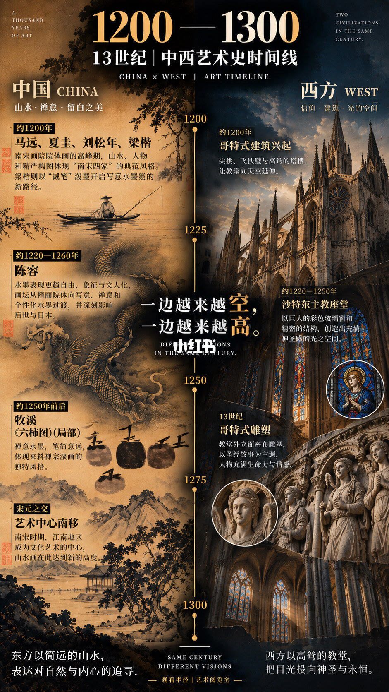
页题是「1200—1300｜13世纪」。中轴约 1200、1225、1250、1275、1300。中心句是「一边越来越空，一边越来越高。」英文 DIFFERENT VISIONS IN THE SAME CENTURY。
中国主题是山水、禅意、留白。约 1200 年并列马远、夏圭、刘松年、梁楷，称为南宋四家的院体高峰，梁楷用减笔另开写意；配图是烟水上的一只小船。约 1220–1260 陈容：水墨更自由、象征、文人化，并写其影响后世与日本，配图是云浪中的墨龙。约 1250 年前后牧溪《六柿图》局部：笔简意远的禅意水墨。宋元之交一条写艺术中心南移，江南成为中心。底部：东方以简远的山水，表达对自然与内心的追寻。
西方主题是信仰、建筑、光之空间。约 1200 年哥特式兴起：尖拱、飞扶壁、高塔。约 1220–1250 沙特尔主教座堂：巨大彩色玻璃和精密结构。13 世纪哥特式雕塑：立面密布圣经人物，强调生命力与情感。底部：西方以高耸的教堂，把目光投向神圣与永恒。「越来越空 / 越来越高」是海报的修辞，不是对全部作品的测量。
5/11
14 世纪：中国找笔墨，欧洲找空间
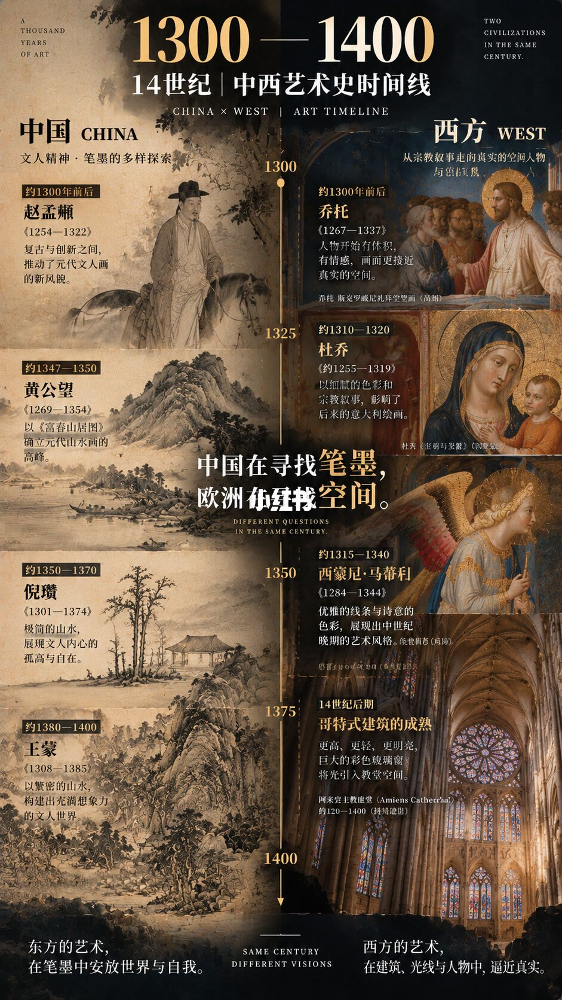
页题是「1300—1400｜14世纪」。中轴约 1300、1325、1350、1375、1400。中心句是「中国在寻找笔墨，欧洲在寻找空间。」
中国主题是文人精神与笔墨的多样探索。约 1300 年前后赵孟頫（1254–1322）：在复古与创新之间推动元代文人画。约 1347–1350 黄公望（1269–1354）：以《富春山居图》写成元代山水高峰。约 1350–1370 倪瓒（1301–1374）：极简山水，疏树、远山、空水和空亭，对应孤高与自在。约 1380–1400 王蒙（1308–1385）：繁密山水。底部：东方的艺术在笔墨中安放世界与自我。王蒙卒年写成 1385，栏目却延伸到 1400，区间盖过了生卒，不能当成创作年。
西方主题是从宗教叙事走向真实的空间、人物与建筑。约 1300 年前后乔托（1267–1337），《斯克罗威尼礼拜堂壁画》局部：人物开始有体积和情感。约 1310–1320 杜乔（约 1255–1319），配图是圣母子；作品中文名无法确认，画面描述里的题名不能当作可靠著录。约 1315–1340 西蒙尼·马蒂尼（1284–1344），《天使报喜》局部：优雅线条和诗意色彩。14 世纪后期哥特式成熟，配图英文为 Amiens Cathedral、中文读作阿米安大教堂，约 1220–1400 持续建设，强调更高、更轻、更亮的彩色玻璃。底部：西方在建筑、光线与人物中逼近真实。
6/11
15 世纪：两种「真实」同时成形
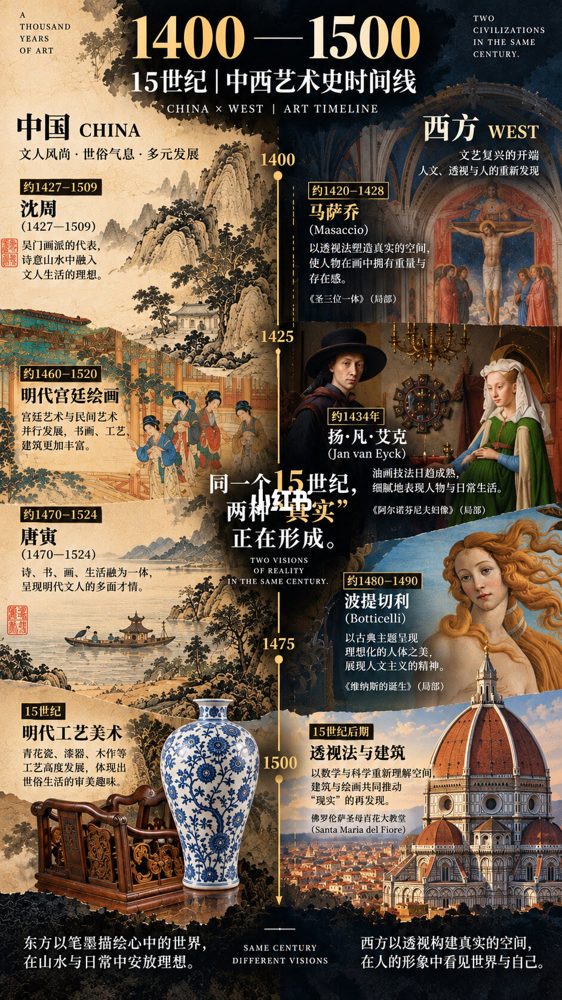
页题是「1400—1500｜15世纪」。中轴能确认 1400、1425、1475、1500 一带。中心句是「同一个15世纪，两种『真实』正在形成。」
中国主题是文人、世俗气息和多元发展。约 1427–1509 沈周：吴门画派，诗意山水里放入文人生活理想。约 1460–1520 明代宫廷绘画：宫廷与民间并行，配图是园中数位着彩衣的女子。约 1470–1524 唐寅：诗书画与生活合在一起，配图是陡崖下小舟中的文人。15 世纪明代工艺：青花瓷、漆器、木作，配图是青花大瓶和深色雕花椅。底部：东方以笔墨描绘心中的世界，在山水与日常中安放理想。沈周、唐寅的生卒都跨进 16 世纪，本页用的是活动区间，不是「只活在 15 世纪」。
西方主题是文艺复兴开端，重新发现人文、透视和人。约 1420–1428 马萨乔，《圣三位一体》局部：用透视给人物重量。约 1434 年扬·凡·艾克，《阿尔诺芬尼夫妇像》局部：油画趋于成熟，配图是戴深色大帽的男子。约 1480–1490 波提切利，《维纳斯的诞生》局部：古典主题里的理想人体。15 世纪后期透视与建筑：佛罗伦萨圣母百花大教堂，文字说用数学和科学重新理解空间。底部：西方以透视构建真实的空间，在人的形象中看见世界与自己。这里的「真实」是海报对两种目标的命名，一边是心中的世界，一边是可测量的空间。
7/11
16 世纪：唐寅和达·芬奇被放在同一百年
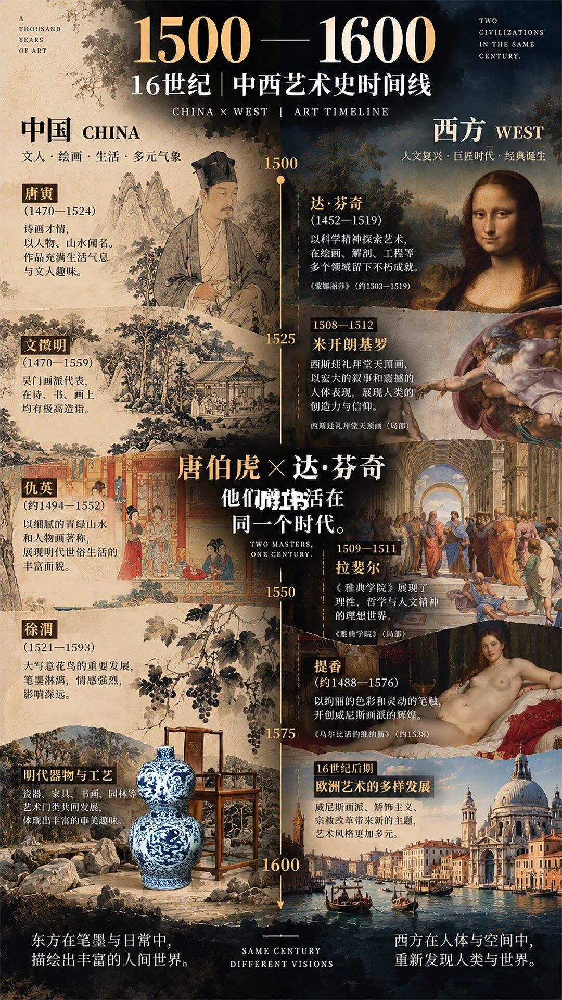
页题是「1500—1600｜16世纪」。中轴约 1500、1525、1550、1575、1600。中心句是「唐伯虎 × 达·芬奇 他们竟然生活在同一个时代。」英文 TWO MASTERS, ONE CENTURY。这是整套图里最直白的「同时」例子：唐寅 1470–1524，达·芬奇 1452–1519，生卒确实重叠。
中国主题是文人、绘画、生活、多元气象。唐寅：诗画、人物与山水，配肖像和山水。文徵明（画面用字或作「文征明」，1470–1559）：吴门，诗书画。仇英（约 1494–1552）：青绿山水和描绘明代世俗生活的人物，配园林中的人物。徐渭（1521–1593）：大写意花鸟，墨色强烈，配葡萄藤一段。明代器物写陶瓷、家具、园林并行，配青花葫芦瓶和明式椅。底部：东方在笔墨与日常中描绘丰富的人间世界。
西方主题是人文复兴、巨匠时代、经典诞生。达·芬奇以科学精神进入绘画、解剖和工程，配《蒙娜丽莎》（约 1503–1519）。米开朗基罗西斯廷天顶（画面把年代写成 1508–1512），配《创造亚当》局部。拉斐尔（1509–1511 这一栏）配《雅典学院》局部，写成理性与人文主义的理想世界。提香（约 1488–1576）配《乌尔比诺的维纳斯》（约 1538），强调色彩和威尼斯画派。16 世纪后期还提到威尼斯画派、样式主义和宗教改革，配图是一座水城建筑景观，具体建筑名称无法确认。底部：西方在人体与空间中重新发现人类与世界。
8/11
17 世纪：笔墨和光线都走到极致
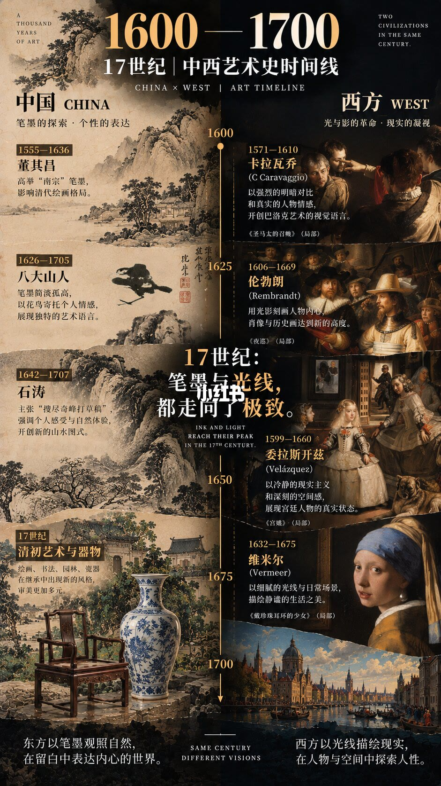
页题是「1600—1700｜17世纪」。中轴约 1600、1625、1650、1675、1700。中心句是「17世纪：笔墨与光线，都走向了极致。」
中国主题是笔墨探索和个性表达。董其昌（1555–1636）：高举南宗笔墨，影响清代绘画格局。八大山人（1626–1705）：简淡孤高，以花鸟寄托个人情感，配枯枝上的一只鸟。石涛（1642–1707）：「搜尽奇峰打草稿」，强调个人感受和自然体验。清初艺术与器物写绘画、书法、园林、瓷器在继承中出新风格，配官帽椅、青花瓶和园林。底部：东方以笔墨观照自然，在留白中表达内心。
西方主题是光与影的革命、对现实的凝视。卡拉瓦乔（1571–1610），《圣马太的召唤》局部：强烈明暗和真实情感，被写成开启巴洛克视觉语言。伦勃朗（1606–1669），《夜巡》局部：用光影刻画内心。委拉斯开兹（1599–1660），《宫娥》局部：冷静的现实主义和空间感。维米尔（1632–1675），《戴珍珠耳环的少女》局部：细腻光线和日常场景。底部：西方以光线描绘现实，在人物与空间中探索人性。四件都标了「局部」，不能把缩图当成对整幅构图的说明。
9/11
18 世纪：两条艺术史在宫廷里碰上
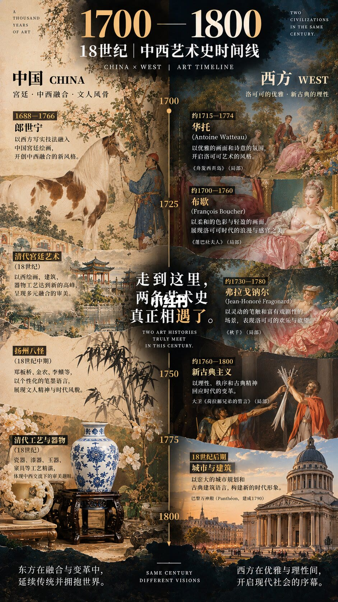
页题是「1700—1800｜18世纪」。中轴约 1700、1725、1750、1775、1800。中心句是「走到这里，两条艺术史真正相遇了。」英文 TWO ART HISTORIES TRULY MEET IN THIS CENTURY。这里的「相遇」指的是技法进入同一座宫廷，不是两套艺术史从此合成一种。
中国主题是宫廷、中西融合、文人风骨。郎世宁（1688–1766）：以西方写实技法融入中国宫廷绘画，配白马、着蓝袍的清宫人物和花树。清代宫廷艺术：绘画、建筑、器物达到新高峰，配亭台院落。18 世纪中期扬州八怪：点名郑板桥、金农、李鱓，个性化笔墨，配墨竹与梅花。清代工艺写瓷器、漆器、玉器、家具体现中西交流下的趣味，配青花瓶和木座上的玉碗。底部：东方在融合与变革中延续传统并拥抱世界。「拥抱世界」是海报的判断，画面证据主要是郎世宁和器物，不是一份交流史。
西方主题是洛可可的优雅和新古典的理性。约 1715–1774 华托，《舟发西妥岛》局部。约 1700–1760 布歇，《蓬帕杜夫人》局部：柔和色彩。约 1730–1780 弗拉戈纳尔，《秋千》局部。约 1760–1800 新古典主义，大卫《荷拉斯兄弟的誓言》局部：以理性、秩序和古典精神回应时代变革。18 世纪后期城市与建筑，巴黎万神殿，建成 1790。底部：西方在优雅与理性之间开启现代社会的序幕。华托卒年若按常见记载早于 1774，本页把风格区间写到 1774，不宜当成他的卒年。
10/11
19 世纪：为什么艺术突然跑得这么快
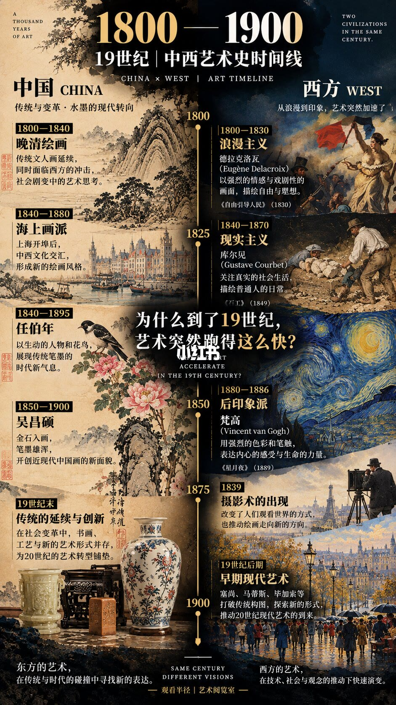
页题是「1800—1900｜19世纪」。中轴约 1800、1825、1850、1875、1900。中心问句是「为什么到了19世纪，艺术突然跑得这么快？」
中国主题是传统与变革、水墨的现代转向。1800–1840 晚清绘画：文人画延续，同时面临西方冲击。1840–1880 海上画派：上海开埠后中西交汇形成新风格，配江岸、船只和西式建筑。1840–1895 任伯年：生动的人物和花鸟。1850–1900 吴昌硕：金石入画，笔墨雄浑。19 世纪末一条写书画、工艺与新形式并存，为 20 世纪转型铺垫，配青花瓶和玉炉一类器物。底部：东方艺术在传统与时代的碰撞中寻找新的表达。海上画派的配图更像开埠后的城市风景，不是一幅任伯年或吴昌硕的原作说明。
西方主题是从浪漫到印象，艺术突然加速。1800–1830 浪漫主义，德拉克洛瓦《自由引导人民》（1830）。1840–1870 现实主义，库尔贝《石工》（1849）。后印象派一栏配梵高《星月夜》（1889）；栏目年份与 1889 是否写在同一行，无法确认完全对齐。1839 摄影术：改变观看方式，也推动绘画走向新方向，配三脚架上的老相机，背景有埃菲尔铁塔。19 世纪后期「早期现代艺术」点名塞尚、马蒂斯、毕加索等，说打破传统构图。底部：西方艺术在技术、社会与观念推动下快速演变。马蒂斯、毕加索的主要活动跨进下一页的 20 世纪，这里是海报的分期，不是生卒年表。
11/11
20 世纪：艺术语言被改写
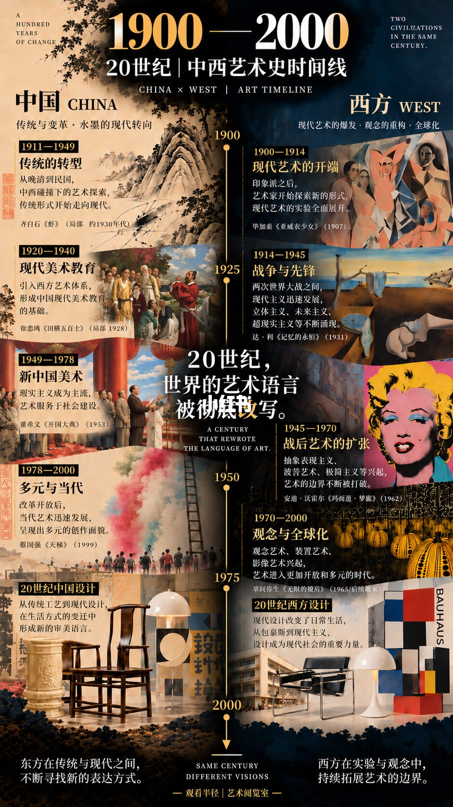
页题是「1900—2000｜20世纪」。顶上左侧是 A HUNDRED YEARS OF CHANGE。中轴约 1900、1925、1950、1975、2000。中心句是「20世纪，世界的艺术语言被彻底改写。」
中国主题仍是传统与变革、水墨的现代转向，但条目已经按政治与教育分期。1911–1949 传统的转型：晚清到民国的中西碰撞，配齐白石《虾》局部（约 1930 年代）。1920–1940 现代美术教育：引入西方艺术体系，配徐悲鸿《田横五百士》局部（1928）。1949–1978 新中国美术：现实主义成为主流，艺术服务于社会建设，配董希文《开国大典》（1953）。1978–2000 多元与当代：改革开放后当代艺术迅速发展，配蔡国强《天梯》（1999）。另有 20 世纪中国设计：从传统工艺到现代设计，配明式椅和一只球形灯。底部：东方在传统与现代之间不断寻找新的表达。齐白石《虾》被放在「传统的转型」栏，画的仍是水墨虾，海报用它代表延续中的现代，不是说虾这张画完成了制度转型。
西方主题是现代艺术的爆发、观念的重构、全球化。1900–1914 现代艺术开端，毕加索《亚威农少女》（1907）。1914–1945 战争与先锋，点名立体主义、未来主义、超现实主义，配达利《记忆的永恒》（1931）。1945–1970 战后扩张，点名抽象表现主义、波普、极简主义，配安迪·沃霍尔《玛丽莲·梦露》（1962）。1970–2000 观念与全球化，点名观念、装置、影像，图注写草间弥生《无限的镜屋》（1965 或后期版本）；配图描述更接近黄色圆点南瓜，图注和配图是否同一条无法确认。20 世纪西方设计写从包豪斯到现代主义，配瓦西里椅和原色几何块。底部：西方在实验与观念中持续拓展艺术的边界。
汇总
同时发生，不等于同一条进步阶梯
结论：这套图要你换一种看艺术史的方式。不要只顺着「宋代山水，然后文艺复兴，然后现代主义」单线往下记，而要问某一个百年里，另一边正在造什么。11–13 世纪，中国从巨碑山水走到留白和禅意，西方从罗马式石墙走到哥特式的高度和彩色玻璃（第 2–4 页）。14–16 世纪，中国在笔墨、吴门和写意里找自己的「真实」，欧洲在乔托、透视、人体和巨匠里找可测量的空间和人（第 5–7 页）。17 世纪两边分别把笔墨和光线推到海报所谓的极致（第 8 页）。18 世纪才用郎世宁这样的宫廷案例声称「两条艺术史真正相遇」（第 9 页）。19–20 世纪，西方因摄影、流派更替和观念艺术显得「跑得快」，中国则从海上画派、金石入画走到美术教育、新中国美术和当代（第 10–11 页）。
依据来自第 1 页的总问题和十个世纪分栏，尤其是每页中轴上的那句对照，以及页脚「东方……西方……」的收束。封面作品名单只是索引，细目以第 2–11 页为准。
边界：每页只挑几位名家和几件名作，不能代表该世纪的全部地区、全部媒介和全部作者。生卒、创作年和「约某某年」经常叠在一起，王蒙、沈周、唐寅、华托、马蒂斯、毕加索都有跨世纪。奥坦柱头、杜乔作品中文名、封面郭熙的朝代、草间弥生图注与配图、16 世纪水城建筑的具体名称，画面读不清或前后不一致，以上标为无法确认。海报里的「真实」「极致」「相遇」「彻底改写」是观看角度，不是考古结论。